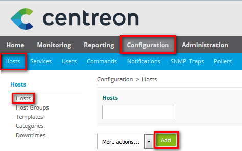

Fazer deploy de host pelo o template¶
No inicio rápido anterior, você adicionou um host novo usando o template generic-host. Este template provê uma configuração minima pré-definida para um host.
Porém, o template de host no Centreon web pode oferecer muito mais do que uma lista de valores pré-definidos. No Centreon web você pode associar templates de serviço em templates de host. Com este processo, você pode gerar de forma fácil o deploy de um host e seus serviços ao mesmo tempo.
Neste exemplo nó vamos usar um template de host fornecido pelo os Pacotes de plugin Centreon para monitorar um servidor Linux. Este template permite que você faça deploy dos seguintes serviços:
- CPU
- Load
- Memory
- Swap
Primeiro, conecte a sua interface Centreon web com uma conta de administrador ou uma conta que permita você gerenciamento os objetos a serem monitorados.
Vá ao menu Configuration > Hosts > Hosts e clique no botão Add:
Você terá acesso a um formulário para definir as configurações do seu equipamento para monitorar. Para iniciar o monitoramento do seu equipamento, configure:
- O nome do objeto no campo Host Name
- Descrição do seu objeto no campo Alias
- Configure o endereço de IP/Hostname (DNS) no campo IP Address / DNS
- Clique no botão + Add a new entry e selecione OS-Linux-SNMP
- Clique no botão Yes para o botão Create Services linked to the Template too
Salve as modificações clicando no botão Save.
O host esta agora definido na interface Centreon web, porém o motor de monitoramento ainda não esta monitorando!
Você deve agora gerar a configuração, exportar e enviar para o motor de monitoramento (poller).
Você pode ver o resultado no menu Monitoring > Status Details > Hosts: